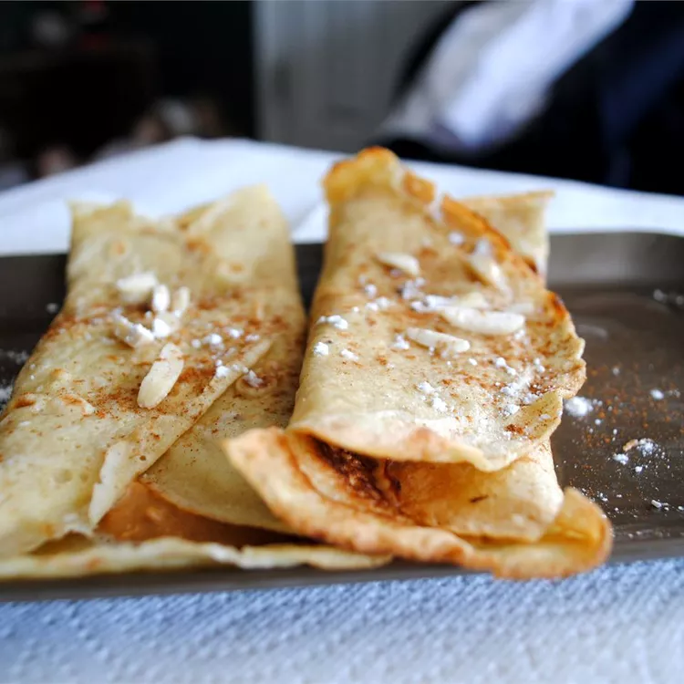

Pannekaken

Ingredients
- 1 ½ cups milk
- 3 eggs
- 1 cup all-purpose flour
- 1 teaspoon sugar
- ¼ teaspoon salt
- cooking spray
Method
- Combine milk and eggs in a blender; add flour, sugar, and salt and blend until smooth.
- Spray a large skillet with cooking spray and heat over medium-high heat. Scoop about
1/4 cup batter into the skillet, and tilt the pan until the batter coats the bottom.
Cook until the top looks dry, about 30 seconds. Carefully slide a spatula under the
pancake and flip. Cook just until browned on the other side, about 3 seconds.
Transfer to a plate and repeat with the remaining batter.